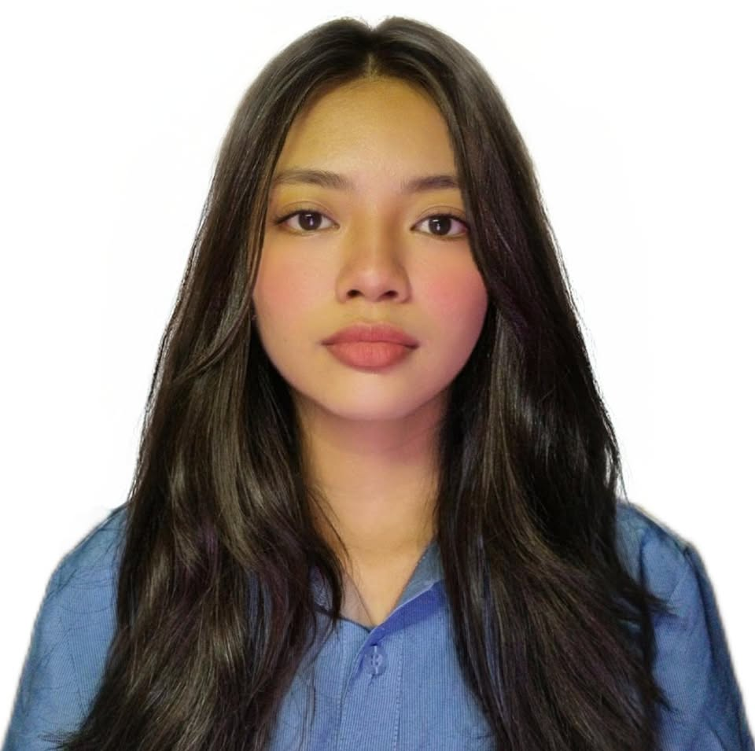

2nd Year - Bachelor of Science in Information Technology with specialization in Multimedia Arts and Animation
I am Alina Rujuan Carreon, a 19 year old resident of Paco, Manila,
navigating the vibrant journey of youth with a heart full of melody and a clear vision for the future.
Living in the heart of Manila has shaped much of who I am,
teaching me to find beauty amidst the urban rush and to appreciate the diverse stories that unfold on every street corner.
To know me is to understand someone who finds harmony in the small things a quiet morning, a kind word, or a perfectly tuned instrument while keeping a steady eye on grand, far-reaching ambitions.
I chose to pursue Information Technology because my passion for photo and video editing sparked a deeper interest in the digital tools we use to create.
I want to understand the software architecture and high performance systems that make professional grade media production possible,
bridging the gap between creative vision and technical execution.